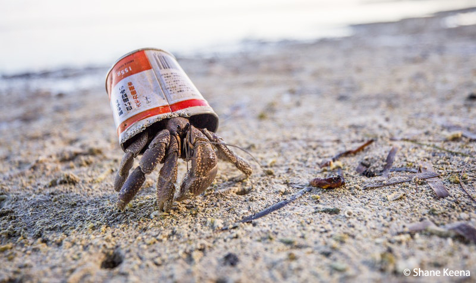

Different Organizations that Give Back to the Ocean:
Oceana
Oceana was founded by a few different foundations who discovered less than .5% of resources spent by environmental nonprofit groups in the U.S. went to the ocean. No organization was working exclusively to help the ocean so they created Oceana. The Oceana mission is, “an international organization focused solely on oceans, dedicated to achieving measurable change by conducting specific, science-based policy campaigns with fixed deadlines and articulated goals”. Oceana has also merged with the Ocean Law Project and Americans Oceans Campaign in the early 2000s.
Woods Hole Oceanographic Institute
WHOI ‘s goal is for their scientists and engineers to understand all facets of the ocean and it’s connections to the atmosphere, leand, ice, seafloor, and humanity. They want to help humanity’s discovery of the environment, and make sure that our current society is sustained for as long as possible. They also want to train the next generation of marine science leaders and to expand the public’s awareness about the importance of the ocean. They want to apply their research to the current problems of society.
Woods Hole Oceanographic Institute was founded in 1930. The world had only been systematically studying the ocean for no more than 50 years before then. The location of Woods Hole was chosen for its deep waters and proximity to top universities like MIT, Harvard, Yale, Brown, and Dartmouth. The location is a mini campus with many scientific research centers, housing facilities, an aquarium, and extensive library facilities. WHOI is responsible for finding the Titanic.
Marine Megafauna
Marine Megafauna focus on the big creatures of the sea such as sharks, whales, and rays. They want to expand beyond research and focus on educating the public and the government. They allow people to “adopt” manta rays and sharks in order to research and protect them. They found there were two different manta ray species, contrary to the belief there was one. Their special interest in megafauna makes them a unique ocean conservation organization because they have a specific focus.
Links to help you help:
Ocean Conservancy Action Center
Oceana - Take Action
Amazon Smile
Commerical partners to buy from
Trips
Adopt a Manta Ray
Adopt a shark
Volunteer Vacations
How to fix plastic pollution
What you can do to fix Climate Change
How to eat sustainable seafood
